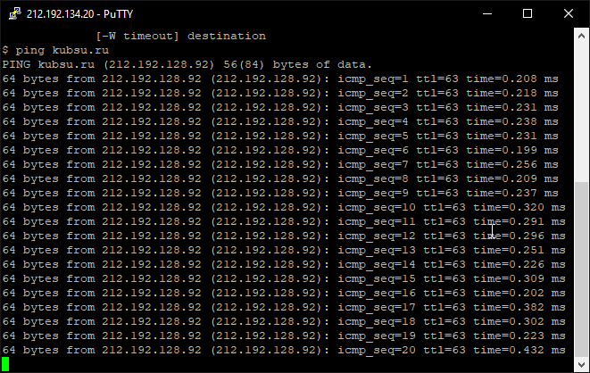
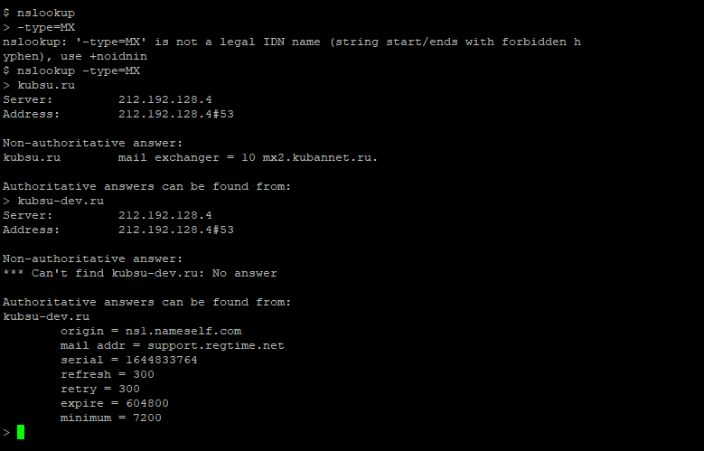
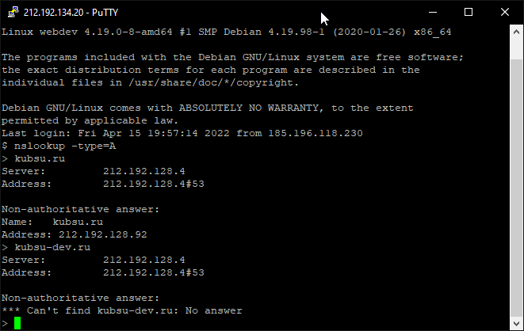
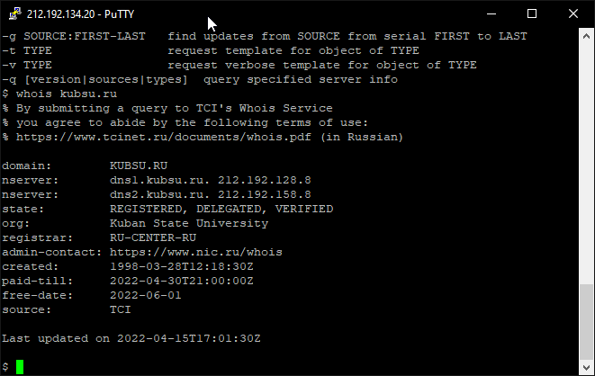
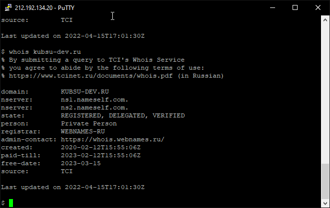

Показывает пинг от kubsu-dev до kubsu

Команда nslookup — инструмент сетевого администрирования для запросов в доменной системе имен (DNS) с целью получения доменного имени, IP-адреса или другой информации из записей DNS.
nslookup -type=A, где A = адресная запись
nslookup -type=MX, где MX = почтовый шлюз + приоритет


Показывает whois о домене


GIT CLONE
Поменяла права

FileZilla